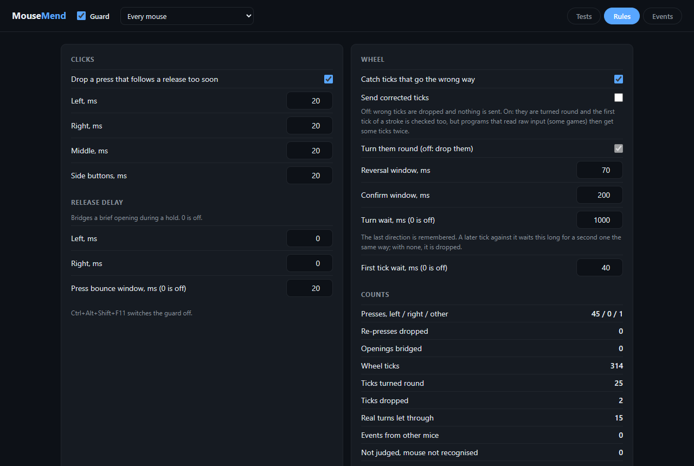

What it fixes
your mouse↓↓↑↓↓
your apps↓↓↑↓↓
Scroll wheel jumps the wrong way
A worn wheel sometimes reads a tick backwards. MouseMend keeps the way you scroll and drops the backwards tick.
your mouseclickclick
your appsclickclick
One click counts as two
A worn switch bounces, so one press arrives twice. MouseMend drops the bounce. Your own double clicks still work.
Set up in three steps
1DownloadIf your browser says it isn't commonly downloaded, choose Keep.
2Run itFrom a folder you keep, not Downloads. If Windows warns you, click More info, then Run anyway.
3DoneIt runs in the system tray and starts with Windows. The first time, the Tuner opens too.
Both warnings are because MouseMend is new and not code-signed. The code is public.
The Tuner
Optional. Click by the clock to open it. It may be behind the ^ arrow.

- Two mice? Pick the worn one at the top, so the other one is left alone.
- Tests count the mistakes MouseMend fixed, and any that still got through.
- Drags letting go halfway? On the Rules tab, under Release delay, set Left to 20. Left releases then wait 20 ms.
Good to know
Changing direction costs a notchWhen you reverse the wheel, the first notch is ignored: on its own it looks just like a misread.
GamesWorks in games like Age of Empires II. Some games, often shooters, read the mouse directly and still see the faults.
Removing itRight click the icon by the clock, untick Start with Windows, click Quit. Then delete MouseMend.exe and the folder %LOCALAPPDATA%\MouseMend.